📲 Add MetroFeed Portland to your home screen
Use MetroFeed like an app for faster access!
Android Instructions
Apple Instructions
Later
Done / Don't ask again



Go
Clear
Find Me
Favorite Routes
🚌 Trip Options
Close
You're not logged in or don't have an account
Please
sign in
,
sign up
, or use the
free version
to continue:
Sign In
Sign Up
Use Free Version
Try
MetroFeed Premium
FREE for 24hrs
NO email needed
Start Free Trial